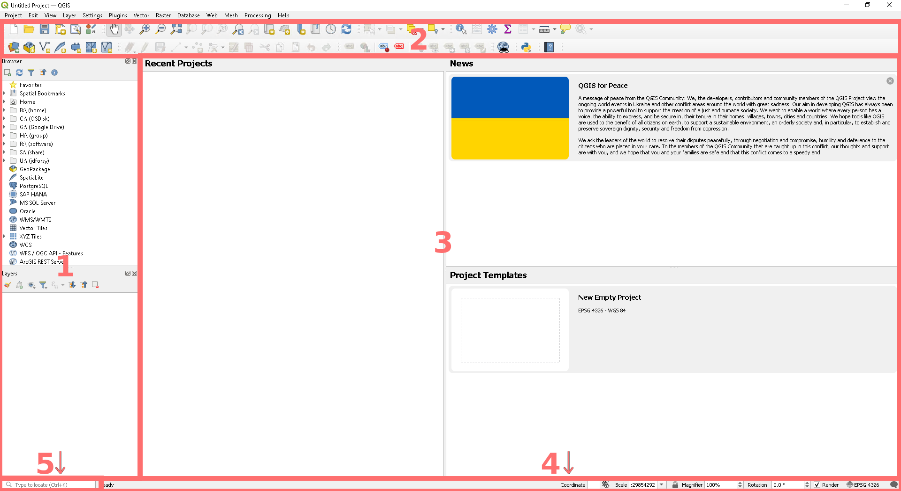
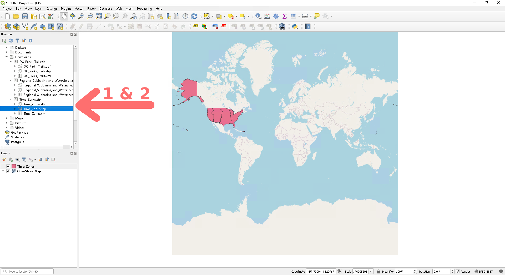
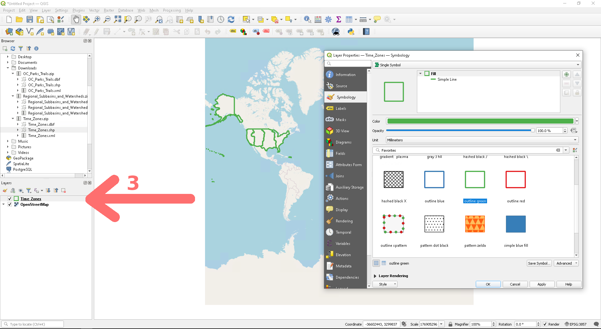
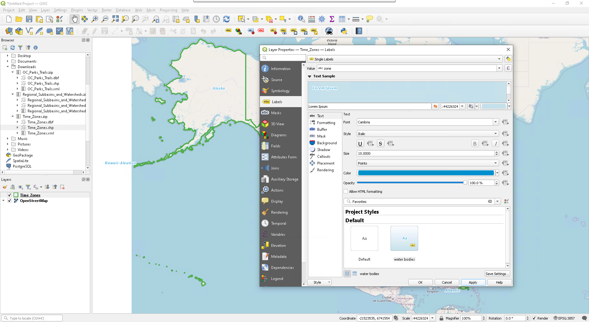
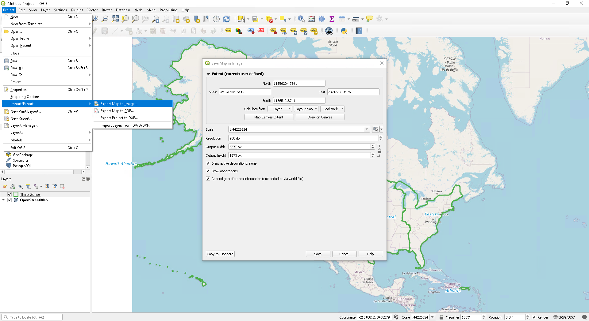
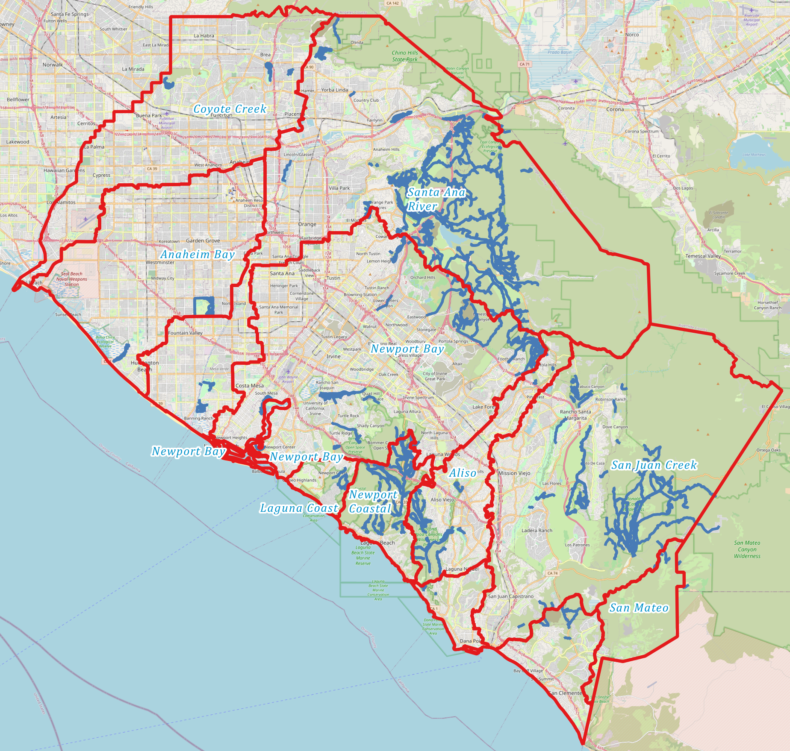

Tutorial #0: Installing QGIS
Chapman University. Earth from Above: Env 329 - Fall 2023
Objectives :
- Install QGIS Software
- Get Acquainted With QGIS’s Toolsbars, Buttons, & Layout

What is QGIS and Why Do I Need It?
QGIS is a geographic information system (GIS) application that supports viewing, editing, printing, and analysis of geospatial data. It is a free and open source alternative to ArcGIS that we will use to analyze NASA satellite data and create maps visualizing the impact of climate change and natural disasters.
Each week you will use this software to work through a new tutorial and complete a “map-of-the-week” assignment that will add tools to your skill set, culminating in an in-depth final project exploring an environmental event using ECOSTRESS and other data sources.
Installing QGIS
Head over to https://www.qgis.org/ and download the latest version for your operating system.
 Windows
Windows
Check for the QGIS executable file (.msi) in whichever folder you downloaded it to and open it. Follow the prompts to install the software.
Open QGIS Desktop from the start menu or desktop icon.
 Mac
Mac
Check for the QGIS executable file (.dmg) in whichever folder you downloaded it to and open it. Follow the prompts to accept the terms and conditions. To install the software, hold and drag the file into your Applications.
Open QGIS by selecting it in Launchpad or use Go → Applications and double click on QGIS.
 Linux
Linux
Use your package manager to install the stable version from your distribution’s repository or follow these instructions to install a more up to date version : https://www.qgis.org/en/site/forusers/alldownloads.html#linux.
Getting To Know QGIS
Congratulations! You have now successfully installed QGIS. Let’s have a quick look at the layout and get you going on your first map.
Your screen will likely resemble something like this:

- Browser Panel & Layers List
- The browser panel lets you easily navigate files and databases. We will use it to import map layers and satellite data.
- In the layers list, you will see all the map layers we have imported for the given project we are working on. Layer examples include a base map (like google maps), satellite raster data (pixels each with a given value… like temperature), and vector data (points, lines, shapes… like roads).
- Toolbars
- Our most often used sets of tools can be found in the toolbars. For example, the Project toolbar allows you to save, load, print, and start a new project.
- Main Work Area / Map canvas
- This is where the map itself is displayed. In the map canvas you can interact with the visible layers: zoom in/out, move the map, select features and many other operations that we will dive into in the next weeks.
- Status bar
- Shows you information about the current map. Also allows you to adjust the map scale, the map rotation and see the mouse cursor’s coordinates on the map.
- Locator bar
- Within this bar you can quickly access to almost all the objects and functions of QGIS: layers, layer features, algorithms, spatial bookmarks, etc, by typing in what you are looking for.
Try It Out! Exploring Your First Map…
I. Add a Basemap Layer
- In the browser window expand your options by clicking on the small arrow next to XYZ Tiles.
- Double click on Open Street Map to load in a basic open source map. You will notice that we just added a layer to the layer window below.
- You can zoom in and out with the magnifying glass icons in the toolbar. The little hand is the pan map function which allows you to move the map around when you are zoomed in. Maybe try finding your home or a favorite place in the world? To reset to the default view you can use the zoom full function (magnifying glass with the arrows in all directions).
II. Add in an Interesting Layer Via Shapefiles
Shapefiles are a common geospatial file type that stores locations, points, lines, and shapes.
- Download this zipped folder from our website to your local computer. Make sure you save it somewhere you can remember.

- After you have the file, use the browser window to locate Time_Zones.zip in the folder you saved it to. Use the little arrow to expand the zip file and double click on the Time_Zones.shp shapefile. Just as before we have now added a new layer to our map.

- This looks a little clunky, so let’s make it more readable and useful. Right click on Windows/Linux or control click on Mac to open up the properties window. Navigate to the symbology window and select green outline. Click Apply and OK. Then zoom and pan the map to center on North America, given that these are only US Timezones.

- Next let’s add labels. Open the Time Zone properties back up and navigate to the Labels window. From the drop down menu at the top select Single Labels. Play around with the options to get the colors how you like them or maybe use one of the included styles, like water bodies. Click Apply and OK.

- Lastly, we want to save your map so you can marvel at your work anytime you’d like and share it with friends at parties. From the Project menu navigate to Import/Export and select Export Map To Image. By default it will use the extent that you have in the viewer. I recommend upping the resolution to 200 dpi. High-five! You have made a map.
Bonus
If you are so inclined you can check out these other interesting shapefiles from the Orange County GIS Database:

Citation: Forsythe, Goldsmith, Fisher 2023.